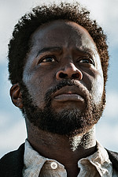
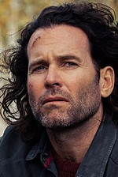
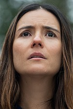
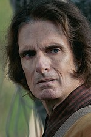
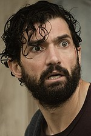
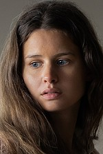

Головні герої та актори
У таблиці нижче наведено основний акторський склад серіалу та коротка характеристика їхніх персонажів.
| Портрет | Актор | Персонаж | Роль у громаді | Статус |
|---|---|---|---|---|
 |
Гарольд Перріно | Бойд Стівенс | Шериф містечка, лідер громади | Живий |
 |
Ейон Бейлі | Джим Метьюз | Інженер, шукає спосіб зв'язку | Живий |
 |
Каталіна Сандіно Морено | Табіта Метьюз | Дружина Джима, знайшла вихід | Невідомо |
 |
Скотт Маккорд | Віктор | Найстаріший мешканець міста | Живий |
 |
Девід Алпей | Джейд Еррера | Геній програмного забезпечення | Живий |
 |
Ейвері Конрад | Сара Майєрс | Чутлива до голосів міста | Живий |
| Дані оновлено станом на 3 сезон (2025) | ||||